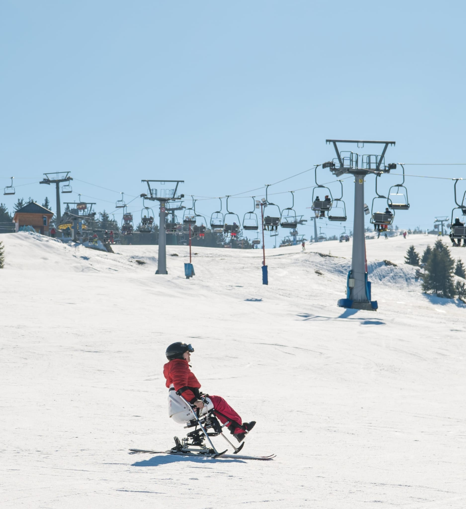

Bine ai venit pe blogul meu! Numele meu este Man Stefania si acest blog este dedicat schiului adaptat pentru persoane cu dizabilitati. Scopul acestui blog este de a arata ca sportul poate fi accesibil pentru toata lumea si ca schiul poate fi practicat si de persoanele cu diferite tipuri de dizabilitati.
Sunt fondatoarea si ownerul asociatiei TRAVELLINGWITHWHEELS, o asociatie care promoveaza mobilitatea, calatoriile si sportul pentru persoanele cu dizabilitati. Prin proiectele noastre incercam sa inspiram oamenii sa exploreze lumea si sa nu renunte la activitatile care le aduc bucurie.
Schiul adaptat este o forma de schi care foloseste echipamente speciale pentru a ajuta persoanele cu dizabilitati sa poata schia in siguranta. Acest sport demonstreaza ca limitele pot fi depasite si ca fiecare persoana poate experimenta bucuria de a cobori pe o partie de schi.

Daca vrei sa afli despre proiectele noi, evenimentele sau articolele noi publicate pe blog, te poti abona pentru a primi notificari.
Introdu emailul tau pentru a primi notificari cand apar articole noi despre schiul adaptat si proiectele asociatiei TRAVELLINGWITHWHEELS.
Daca doresti sa afli mai multe despre proiectele asociatiei TRAVELLINGWITHWHEELS sau despre schiul adaptat, ma poti contacta folosind butonul de mai jos.